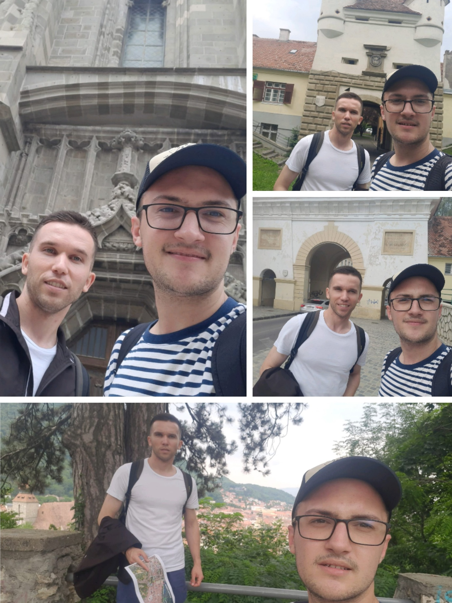
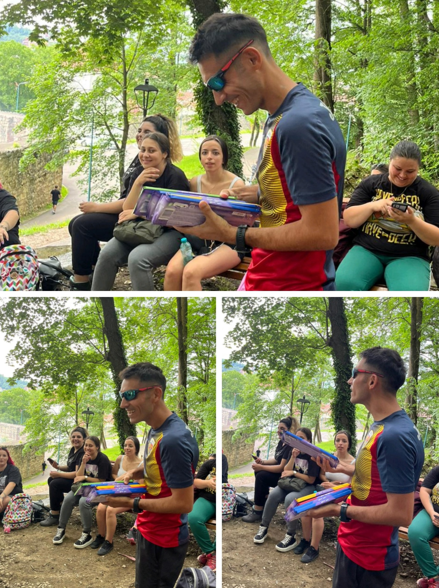
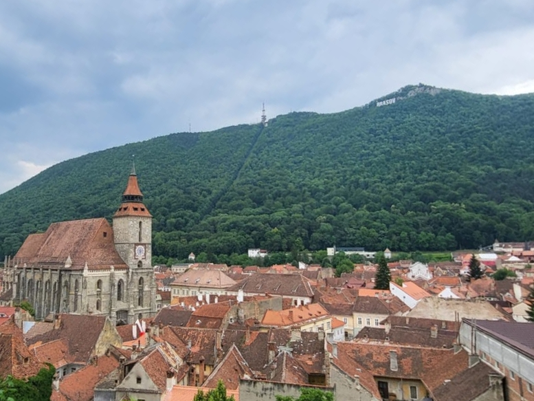
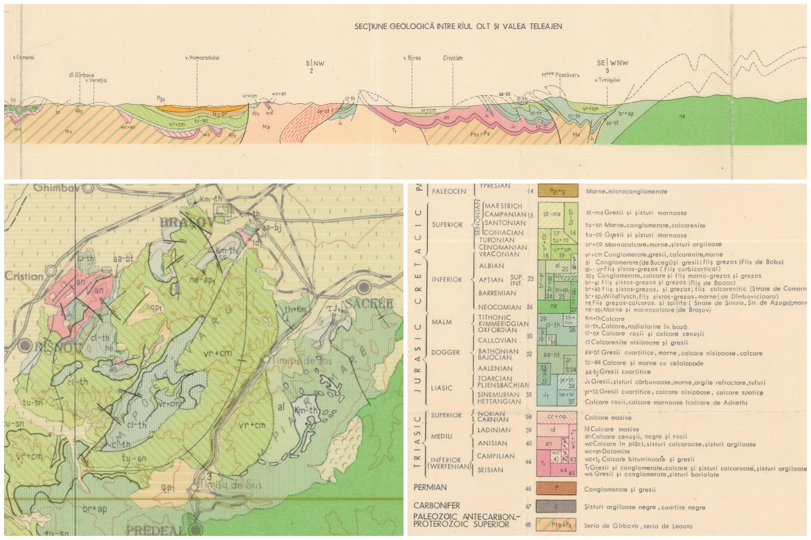
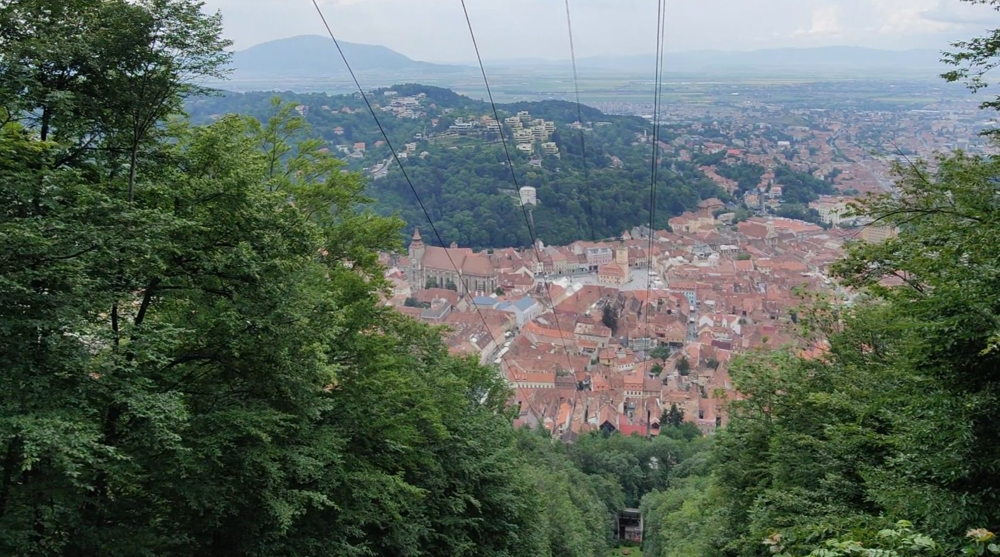
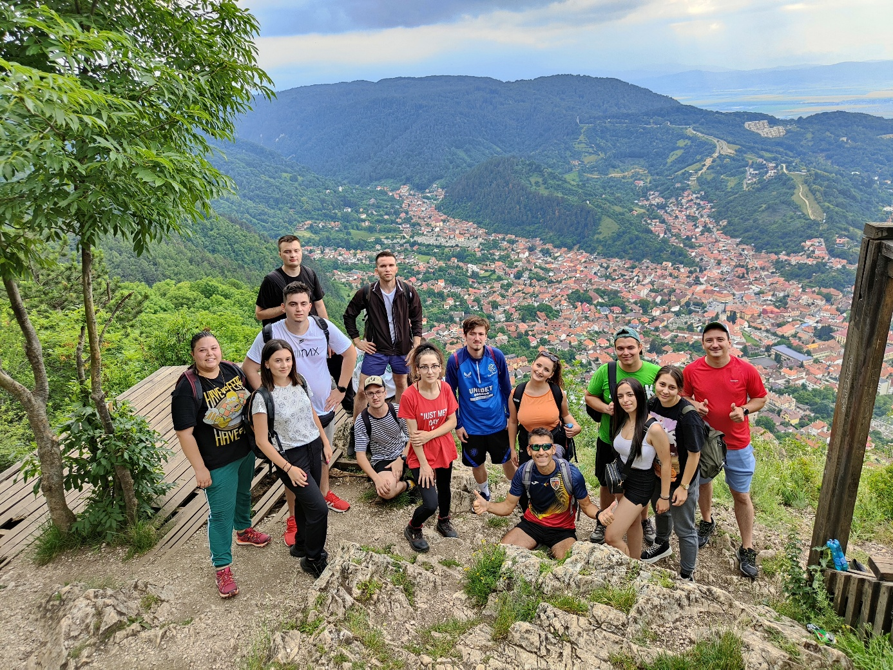

Pentru studenții geografi, una dintre cele mai așteptate perioade din timpul anului universitar este practica de teren: o săptămână de explorări, observații, măsurători și descoperiri în regiuni cu peisaje și caracteristici distincte.
În perioada 2-8 iulie 2023, Brașovul a devenit baza practicii de specialitate pentru studenții din anul II, oferind posibilitatea de a aborda zilnic obiective turistice și peisaje complexe aflate pe o rază accesibilă.
Prima zi ne-a găsit în gara din Constanța, dis-de-dimineață, urcând în trenul direct de Brașov. Răsăritul ne-a încărcat cu energie, iar drumul până la destinație a trecut relativ repede.
Fotografii și momente din prima zi










Ajunși în Brașov, ne-am îndreptat către unitatea de cazare, ne-am organizat pe camere și am stabilit întâlnirea pentru activitățile zilei: orientare cu harta în Centrul Vechi și o scurtă drumeție pe Tâmpa.
Prima activitate a fost Ovidius Express, un concurs de orientare-viteză în Centrul Vechi al Brașovului. Studenții, grupați în echipe de câte două sau trei persoane, au primit o hartă cu obiective turistice pe care trebuiau să le identifice fără telefon și fără ajutor de la localnici.
După finalizarea concursului și premierea echipelor câștigătoare, am pornit spre a doua activitate a zilei: urcarea pe Muntele Tâmpa și observarea principalelor caracteristici ale peisajului geografic local și înconjurător.
Muntele Tâmpa, deși are altitudinea de numai 960 m, domină orașul prin poziția sa și prin cei aproximativ 300 m diferență față de nivelul Brașovului. Este un reper esențial al orașului și o excelentă sală de curs în aer liber.
Pe Drumul Serpentinelor, traseu ușor și bine marcat, am discutat despre geologie, relief, vegetație, păduri de fag, habitate, puncte de belvedere și statutul de rezervație naturală al Muntelui Tâmpa.
De pe vârf, turul de orizont a permis interpretarea Depresiunii Brașovului, a cartierului Șchei, a nucleului istoric și a unităților montane învecinate. Prima zi s-a încheiat ca o introducere în săptămâna de practică, cu promisiunea unor trasee și mai frumoase în zilele următoare.